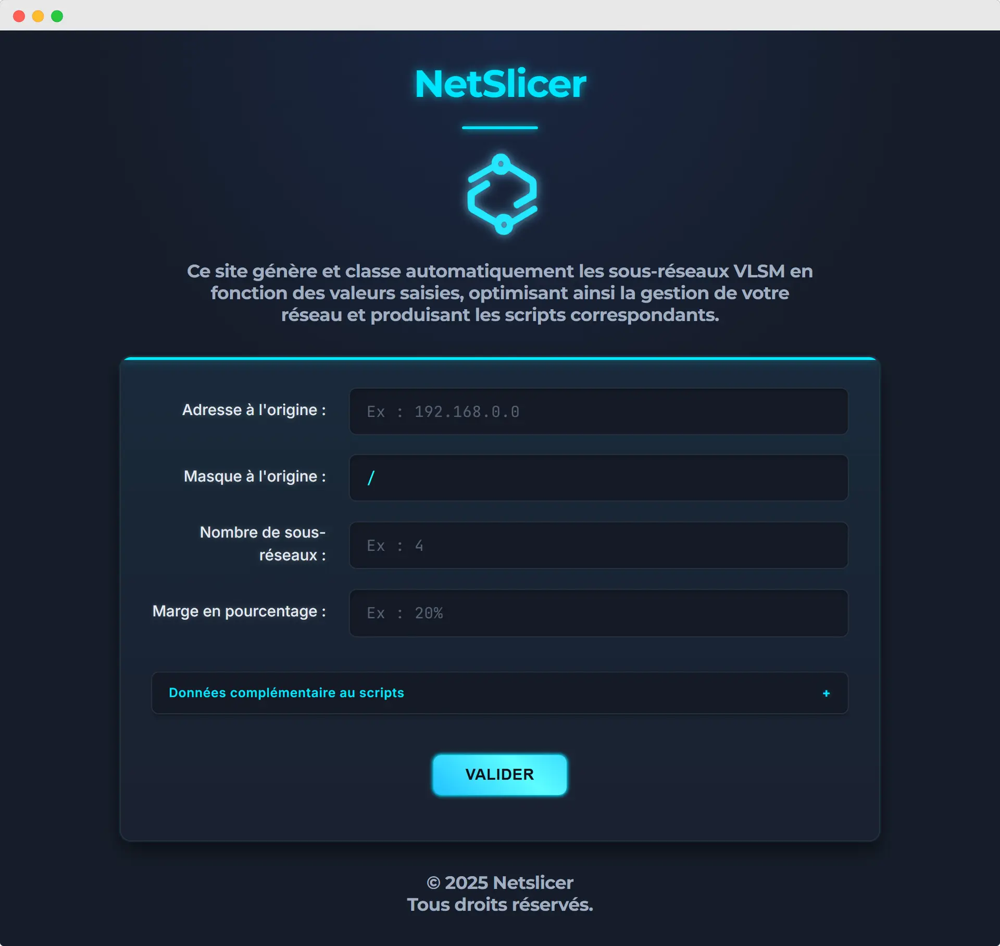
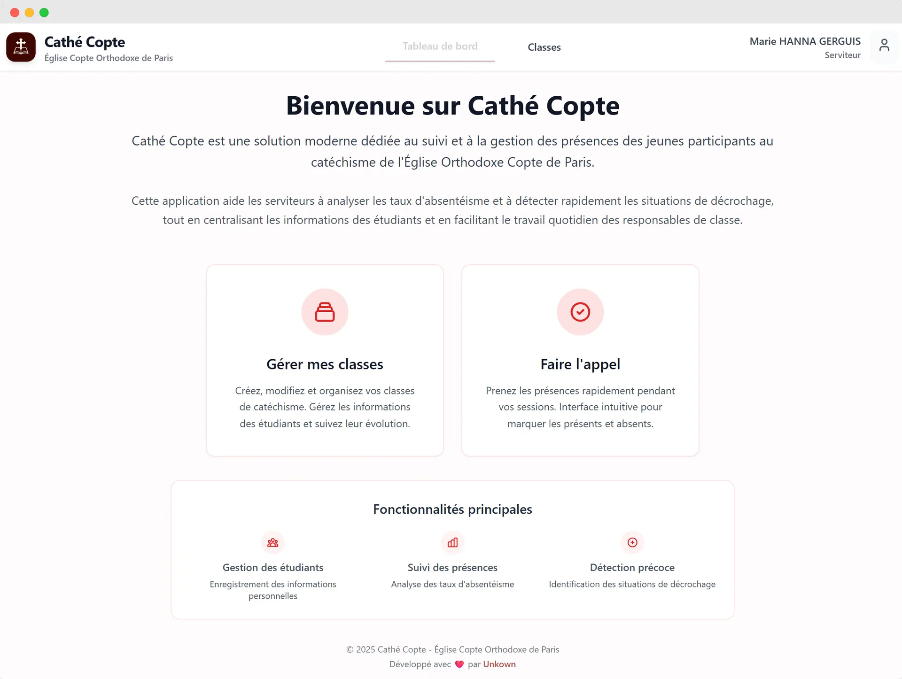
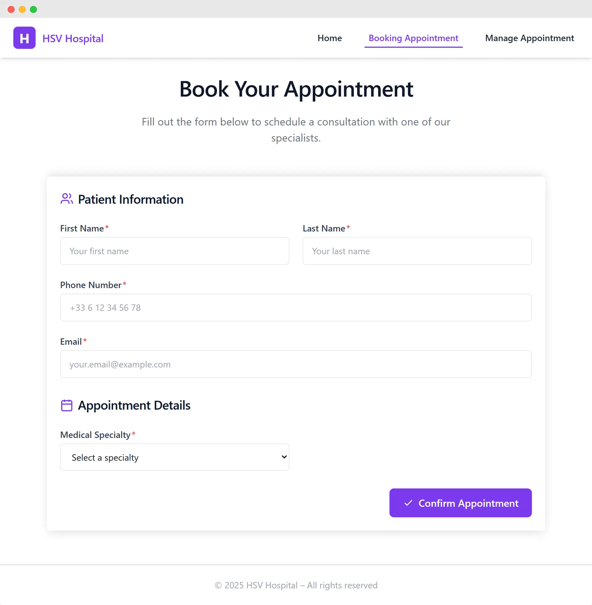

Passionné par la technologie depuis mon plus jeune âge, je m'appelle Marc Awad, développeur Full-Stack, et j’aime transformer des idées en projets web propres, évolutifs et entièrement déployés. J’apprécie particulièrement travailler sur des applications à la fois fonctionnelles et accessibles en ligne, en explorant des technologies modernes et gratuites comme Vercel et Supabase pour créer rapidement des projets full-stack pertinents.
Organisé, j’accorde une grande importance à la précision dans chaque ligne de code ainsi qu’à la structure de chaque projet. GitHub et la gestion de projet font partie intégrante de mon flux de travail quotidien afin d’assurer une collaboration fluide et des résultats de haute qualité.
Curieux de la culture open-source, j’aborde chaque défi avec un esprit de progression, toujours en train d’apprendre et d’expérimenter de nouveaux outils. N’hésitez pas à découvrir mes projets favoris pour voir mon travail en action.
Cisco CCNAMicrosoft Copilot & IA Générative (Unow)
Langues
Français (natif)Anglais (B2+)
Projets
NetSlicer
Développeur full-stack sur un projet académique réalisé en 5 jours, responsable du développement, du déploiement et de la gestion du projet, créant un outil web pour automatiser la configuration des VLAN sur Windows Server et des équipements Cisco, réduisant considérablement le temps de configuration réseau manuelle. Technologies :HTMLCSSJavaScriptPowerShellPython Voir le projet en ligne →

Cathé Copte
Développeur full-stack et DevOps sur un projet bénévole pour mon église, gérant tout de l'architecture, la conception de la base de données et le développement backend/frontend jusqu'au déploiement, créant une application web pour gérer la présence des jeunes dans les classes de catéchisme copte orthodoxe avec des tableaux de bord et un suivi des absences pour simplifier la gestion communautaire. Technologies :Nuxt.jsSupabaseVercel Voir le projet en ligne →

HSV Hospital
L'un de mes premiers projets académiques, où j'ai acquis une expérience pratique en conception UI/UX, architecture système et orchestration de workflows, développant un système de réservation de rendez-vous pour les patients qui optimise les processus hospitaliers et améliore l'expérience utilisateur. Technologies :Vue.jsTypeScriptFirebaseVercel Voir le projet en ligne →

Formation
Sup de Vinci
Bachelor Informatique (2023 – 2026) — Major de promo en 1ère année
Actuellement à Sup de Vinci, je développe une expertise en développement logiciel, technologies web et mobiles, cloud computing et cybersécurité. Je participe à des projets collaboratifs simulant le développement logiciel en conditions réelles, ce qui me permet d’acquérir une expérience pratique avec React, Node.js, TypeScript, Tailwind CSS et d’autres technologies web modernes.
UPEC (Université Paris-Est Créteil)
Licence Sciences pour l'Ingénieur (2021 – 2023)
Cursus multidisciplinaire couvrant les mathématiques, la mécanique, l’électronique et la programmation. Cette formation m’a permis de développer de solides compétences analytiques et en résolution de problèmes, constituant une base solide pour mes études actuelles en informatique.
Expérience
Prévoir
Développeur Full-Stack (Alternance) (Octobre 2025 – Présent)
Participation aux projets logiciels internes et à une migration vers React. Développement d’une bibliothèque de composants partagés visant à standardiser les flux de travail de l’équipe, améliorant ainsi la qualité du code, l’efficacité et la collaboration au sein de l’équipe digitale. Technologies :ReactTypeScriptTailwind CSSC#
Ace Medias Tools
Développeur Full-Stack (Alternance) (Mai 2025 – Septembre 2025)
Développement d'outils web de gestion de codecs audio en Vue.js et Go, conteneurisation Docker. Rédaction de dossiers techniques et schémas d'architecture pour l'équipe et les déploiements clients. Technologies :Vue.jsGoDocker
Contact
Connectons-nous et créons quelque chose ensemble !